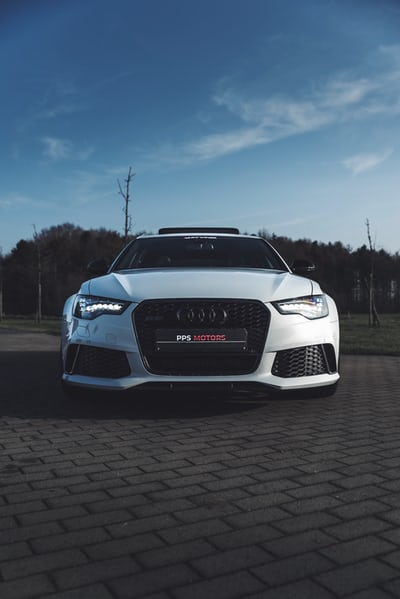

style de voiture
familliale
Loin, très loin, au delà des monts Mots, à mille lieues des pays Voyellie et Consonnia, demeurent les Bolos Bolos. Ils vivent en retrait, à Bourg-en-Lettres, sur les côtes de la Sémantique, un vaste océan de langues.
Sport
Loin, très loin, au delà des monts Mots, à mille lieues des pays Voyellie et Consonnia, demeurent les Bolos Bolos. Ils vivent en retrait, à Bourg-en-Lettres, sur les côtes de la Sémantique, un vaste océan de langues.
Coupé Cabriolet

Loin, très loin, au delà des monts Mots, à mille lieues des pays Voyellie et Consonnia, demeurent les Bolos Bolos. Ils vivent en retrait, à Bourg-en-Lettres, sur les côtes de la Sémantique, un vaste océan de langues.